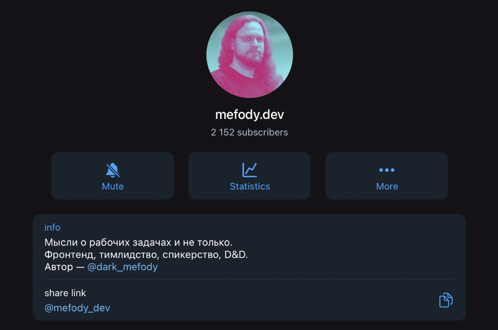

По-настоящему красивые переходы средствами браузера
Никита Дубко, «Веб-стандарты»
Никита Дубко
- 15 лет в профессии
- верстаю на CSS 5
- подкастер
- беларус

gzip_size https://static.tildacdn.com/js/tilda-animation-2.0.min.js
Plain: 34298
Gzipped: 6749
Intersection
Observer API
MDN
const observer = new IntersectionObserver(
callback,
{
root: document.querySelector('#scrollArea'),
rootMargin: '0px',
threshold: [1.0],
}
);
const callback = (entries, observer) => {
entries.forEach((entry) => {
if (entry.isIntersecting) {
if (entry.intersectionRatio >= 0.75) {
// TODO
}
}
});
};

animation: hadouken 2s linear infinite;
animation-name: hadouken;
animation-duration: 2s;
animation-timing-function: linear;
animation-iteration-count: infinite;
function easeInOut(t) {
if (t <= 0.5) {
return 2 * t * t;
}
t -= 0.5;
return 2 * t * (1 - t) + 0.5;
}
Мы даже можем проигрывать эту функцию назад в DevTools.
А если привязаться к скроллу?
@keyframes grow-progress {
from { transform: scaleX(0); }
to { transform: scaleX(1); }
}
.target {
transform-origin: 0 50%;
animation: grow-progress auto linear;
animation-timeline: scroll();
}
animation-timeline: scroll(<scroller> <axis>)
<scroller>: nearest, root, self
<axis>: block, inline, x, y
А если я хочу хитро привязаться к чему угодно на странице?
@keyframes animate-it { … }
.scroller {
scroll-timeline-name: --my-scroller;
scroll-timeline-axis: inline;
/* scroll-timeline: --my-scroller inline; */
}
.target {
animation: animate-it linear;
animation-timeline: --my-scroller;
}
https://developer.chrome.com/docs/css-ui/scroll-driven-animations?hl=en
const $progressbar = document.querySelector('#progress');
$progressbar.style.transformOrigin = '0% 50%';
$progressbar.animate(
{
transform: ['scaleX(0)', 'scaleX(1)'],
},
{
fill: 'forwards',
timeline: new ScrollTimeline({
source: document.documentElement,
}),
}
);
А если привязаться к вьюпорту, как в Intersection Observer API?
animation-timeline: (<axis> <view-timeline-inset>)
.revealing-image {
view-timeline-name: --revealing-image;
view-timeline-axis: block;
animation: auto linear reveal both;
animation-timeline: --revealing-image;
animation-range: entry 25% cover 50%;
}
animation-range: entry 0% entry 100%;
const tl = new ViewTimeline({
subject: document.getElementById('subject'),
});
Демо https://codepen.io/jh3y/pen/abPgrGR
Демо 1 https://codepen.io/jh3y/pen/LYayOKG
Демо 2 https://codepen.io/jh3y/pen/NWevEdv
Полифил https://github.com/flackr/scroll-timeline
Пример на Angular.js, Vue, React
Это много весит (размер библиотеки)
Есть элемент, который превращается в другой элемент
По клику запоминаем, где он
Скачиваем и рисуем всё, что нужно на новой странице, скрыто
Включаем сложную анимацию прятания старых DOM-узлов, показываем новые
https://developer.chrome.com/docs/web-platform/view-transitions/
startViewTransition — запоминаем текущее состояние страницы. В том числе делаем скриншот
Сохраняем новое состояние страницы
Браузер создаёт псевдоэлементы
::view-transition
└─ ::view-transition-group(root)
└─ ::view-transition-image-pair(root)
├─ ::view-transition-old(root)
└─ ::view-transition-new(root)
Делаем анимацию между состояниями средствами браузера
Мы можем управлять при помощи CSS
::view-transition-old(root),
::view-transition-new(root) {
animation-duration: 5s;
}
`view-transition-name` — задаём новую группу для перехода
Можно анимировать: прозрачность, transform, width/height
Дебажить через консоль там же, где и обычные анимации
Ссылка на мой доклад про DevTools
А если элемента раньше не было? Или есть только на новой странице?
/* Entry transition */
::view-transition-new(sidebar):only-child {
animation: 300ms cubic-bezier(0, 0, 0.2, 1) both fade-in,
300ms cubic-bezier(0.4, 0, 0.2, 1) both slide-from-right;
}
/* Exit transition */
::view-transition-old(sidebar):only-child {
animation: 150ms cubic-bezier(0.4, 0, 1, 1) both fade-out,
300ms cubic-bezier(0.4, 0, 0.2, 1) both slide-to-right;
}
Но что делать, если нужно что-то скачать и это медленно?
Можно использовать `Promise.race([ document.fonts.ready, wait(100) ])`
Поэтому сейчас API работает только для SPA, навигацию нужно обновлять руками.
::view-transition-old(full-embed),
::view-transition-new(full-embed) {
/* Prevent the default animation,
so both views remain opacity:1 throughout the transition */
animation: none;
/* Use normal blending,
so the new view sits on top and obscures the old view */
mix-blend-mode: normal;
}
@media (min-width: 500px)
@media (prefers-reduced-motion) {
::view-transition-group(*),
::view-transition-old(*),
::view-transition-new(*) {
animation: none !important;
}
}
`const transition = document.startViewTransition` — посмотреть в инспекторе, что возвращает
`transition.finished` — завершились
`transition.ready` — элементы готовы
В каких браузерах работает?
https://webkit.org/standards-positions/, https://mozilla.github.io/standards-positions/
https://bugzilla.mozilla.org/show_bug.cgi?id=1823896
https://bugs.webkit.org/show_bug.cgi?id=259055
Как проверить: `document.startViewTransition`
function startViewTransition(callback) {
if (!document.startViewTransition) {
callback();
return;
}
document.startViewTransition(callback);
}
Ломает инкрементальный рендеринг https://ericportis.com/posts/2023/view-transitions-break-incremental-rendering/
Что такое инкрементальный рендеринг?
https://github.com/GoogleChromeLabs/quicklink#quicklinkprerenderurls
готовая библиотека https://github.com/noamr/velvette?tab=readme-ov-file
НЕ SPA: https://github.com/WICG/view-transitions/blob/main/cross-doc-explainer.md
Демо 1 https://codepen.io/bramus/pen/MWLZoRd
Демо 2 https://codepen.io/bramus/pen/BabRVLg
Демо 3 https://codepen.io/dannymoerkerke/pen/ExMEPaW
Переключение темы https://codepen.io/jh3y/pen/MWzdvwL
Страничка конференции со спикерами
По клику на аватарку пусть открывается страничка спикера с докладом
По скроллу карточки спикеров красивенько выезжают и зумятся
https://dump-spb.ru/#!/tfeeds/687772436761/c/Frontend
